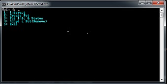
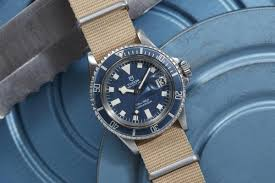

Here is a preview of some projects that I have completed. I hope that you enjoy them as is.
Project 1

This project is a example of a group project completed using C# programming language. It showcases my ability to complete a project in a agile setting, using object oriented programming, and the abilty using test driven developmentstyle formatting.
Project 2

A demonstartion of ability to create a front-end styled page. Using CSS, HTML, anad FlexBox, I was able to create a enjoyable to view web page.
Project 3

This is just a filler for the projects section. Another project will be added once it is completed and looks good enough for me to present.